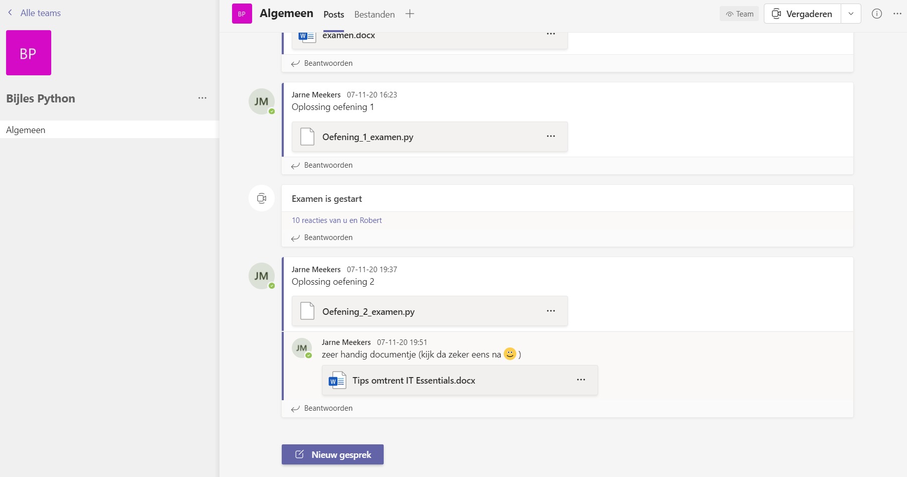
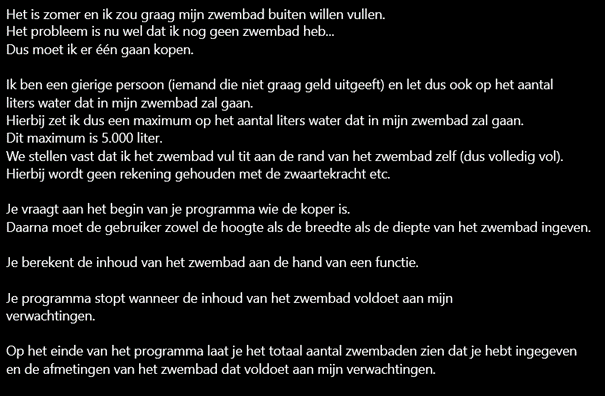
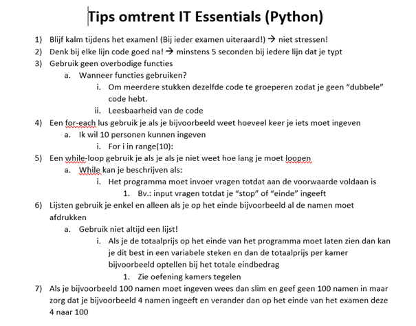

In het secundair onderwijs maakte ik de keuze om de opleiding Toegepaste Informatica te gaan volgen in mijn verdere schoolcarrière. Mijn tweede keuze was echter een lerarenopleiding. Ik koos voor deze opleiding omdat mijn mama lerares is in het lager onderwijs en het mij leuk leek om in het onderwijs tewerkgesteld worden. Jammer genoeg raadde de klassenraad dit af omdat ze mij niet in het onderwijs tewerkgesteld zagen. Verder was ik ook een te stil persoon en zou ik dus de klas niet onder controle krijgen. In het kader van I-Talent kreeg ik de kans om bijles te geven. Dit zag ik als een mooie kans om toch eens les te kunnen geven zonder een lerarenopleiding te volgen.
Mijn verwachtingen heb ik persoonlijk in het begin hoog gelegd omdat ik het aspect Study Buddy serieus nam en de studenten wilde helpen en hen iets bijleren. In totaal heb ik vijf sessies gegeven. De eerste vier sessies ging puur om de leerstof, de laatste sessie was een examen. Twee grote oefeningen zijn altijd een goede voorbereiding op het examen. Met volle teugen begon ik aan mijn eerste bijles. Deze hield een korte kennismaking in samen met het overlopen van de sessies. Vervolgens achterhaalde ik waar de valkuilen zich bevonden bij mijn tutees. Tijdens de drie volgende sessies legde ik de theorie volledig opnieuw uit samen met praktische voorbeelden.
Omdat Covid-19 het ingewikkeld maakt om van op afstand les te geven was het zeker en vast een uitdaging voor mij. Je ziet immers de studenten niet in het echte leven en online lesgeven is toch pittiger dan ik had verwacht. De communicatie verliep via Microsoft Teams waarin ik een kanaal “Bijles Python” had aangemaakt.
Verder is de communicatie soms wat minder geweest. Zo had een student ons Teams-kanaal niet in de gaten gehouden waardoor hij later kwam opdagen of zelfs niet. Dit was voor mij toch wel wat lastiger omdat het niet altijd evident is om de leerstof twee of zelfs drie keer te herhalen. Wanneer dit zich voordeed hadden de tutees zeker en vast de kans om mij een privéberichtje te sturen en te vragen wat we gezien hadden. Vervolgens mochten ze mij ook altijd sturen in verband met oefeningen die ze tijdens de les of thuis gemaakt hadden.
Per sessie liet ik de tutees oefeningen maken. Deze oefeningen waren volledig nieuw voor hen. Hiermee bedoel ik dat ik ze zelf heb verzonnen. Als je telkens dezelfde oefening maakt leer je immers niets. In dit aspect spendeerde ik toch wel behoorlijk wat tijd. Zo maakte ik de uitleg per oefening wat langdradig. Heel wat informatie dat eigenlijk geen doel had tot de oefening. Ik neem een aantal oefeningen op in het verslag en niet alles omdat het toch behoorlijk wat oefeningen zijn.
Voor elk examen vind ik het fijn om tips te krijgen en/of een korte samenvatting. Dit had ik dan ook gemaakt voor mijn tutees.
Een aantal tutees beheersten de leerstof zeer goed. Dat zag ik ook aan hun vorderingen. Eén tutee daarentegen was totaal niet mee en snapte het na een tijd nog niet. Deze tutee heb ik daarom ook telkens laten antwoorden op mijn vragen zodat ik weet waar ze moeilijkheden mee had. De andere tutees hadden de mogelijkheid om het antwoord privé naar mij te sturen. Zoals eerder vermeld vond het examen plaats tijdens de laatste sessie. Dit examen was toch behoorlijk goed gemaakt. Per sessie mocht ik twee uur bijles geven. Dit vond ik persoonlijk veel te weinig. Daarom liep iedere sessie uit tot wel vier uur. De laatste sessie heb ik ook gevraagd aan mijn tutees om eens een reflectie te schrijven zodat ik kan achterhalen of ik het goed of zelfs niet goed heb gedaan. Hierbij kwam ik tot de conclusie dat ik het zeer goed heb gedaan en dat ik de studenten heb kunnen helpen.
Per sessie mocht ik twee uur bijles geven. Dit vond ik persoonlijk veel te weinig. Daarom liep iedere sessie uit tot wel vier uur. De laatste sessie heb ik ook gevraagd aan mijn tutees om eens een reflectie te schrijven zodat ik kan achterhalen of ik het goed of zelfs niet goed heb gedaan. Hierbij kwam ik tot de conclusie dat ik het zeer goed heb gedaan en dat ik de studenten heb kunnen helpen. Voor elk examen vind ik het fijn om tips te krijgen en/of een korte samenvatting. Dit had ik dan ook voor mijn tutees gemaakt.
Uiteraard heb ik ook lesvoorbereidingen gemaakt. Dit is wel iets wat ik nooit echt belangrijk heb gevonden maar nu toch wel zeker een belangrijk aspect vind. Welke onderwerpen ga ik vandaag uitleggen? Zou ik een extra oefening verzinnen voor de tutees? Zo ja, welke oefening zou ik dan verzinnen? Dit zijn toch wel vragen die ik bij iedere lesvoorbereiding in gedachten had. Na iedere sessie heb ik ook gereflecteerd en zag telkens vorderingen, ook bij mij. Zo kwam ik na sessie één tot de conclusie dat één tutee eigenlijk niet veel kende van programmeren en haar toch wel moest bijbenen. Ik ben ontzettend blij dat ik eens bijles heb kunnen geven. Verder heb ik de tutees laten kennismaken met de valkuilen van het programmeren. Daarnaast is het altijd leuk om je eigen kennis te delen met anderen en hen ook iets bij te leren. Ten slotte heb ik vriendschappen opgebouwd waarmee ik tot de dag van vandaag nog steeds contact mee heb. Zo krijg ik wekelijks wel een vraag van een tutee om hem verder te helpen en hem nog eens bijles te geven. Dit zijn redenen waarom ik de activiteit Study Buddy opneem in mijn portfolio.